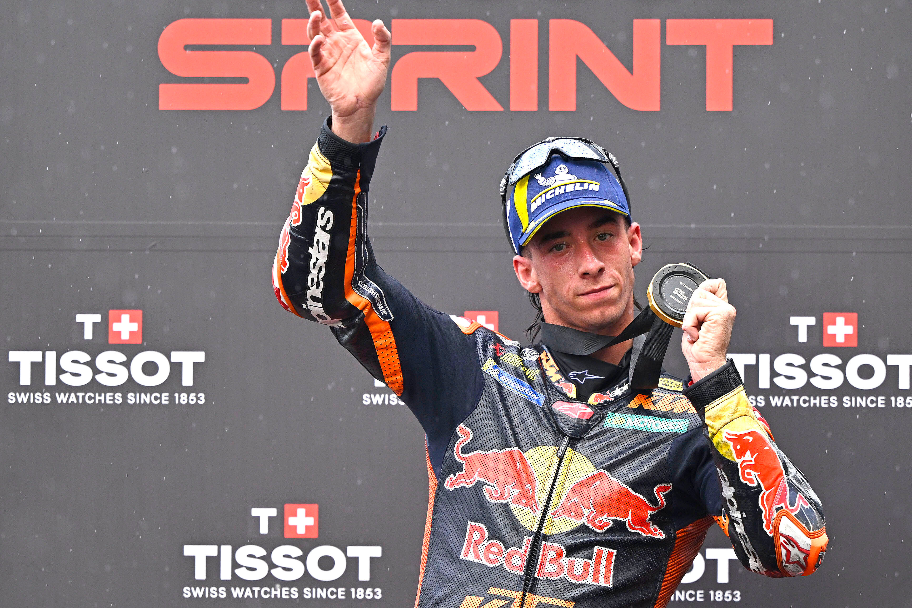

O GP da Malásia de MotoGP 2026 terminou com uma demonstração de força de Marc Márquez. Neste domingo, 1º de novembro, o piloto da Ducati Lenovo Team venceu a corrida principal no Circuito Internacional de Sepang, superando Pedro Acosta, da KTM, por apenas 4,172 segundos. Álex Márquez, da Gresini Ducati, completou o pódio de uma prova que aproximou o líder do campeonato de mais um título mundial.
A vitória foi a sétima de Márquez na temporada, a 80ª na categoria principal e a terceira no GP da Malásia. Com o resultado, o piloto chegou aos 399 pontos no Mundial de MotoGP 2026, abrindo 44 de vantagem sobre Jorge Martín, da Aprilia, que não participou das corridas após enfrentar problemas físicos decorrentes de uma fratura no punho direito.
O fim de semana também teve protagonismo de Pedro Acosta, vencedor da corrida Sprint no sábado, 31 de outubro, e segundo colocado na prova principal. Já o brasileiro Diogo Moreira, da Pro Honda LCR, viveu resultados opostos: conquistou o oitavo lugar na Sprint, mas caiu quando disputava uma posição entre os dez primeiros no domingo.
A etapa da Malásia foi a 19ª das 22 previstas no calendário da MotoGP 2026, e teve impacto importante tanto na disputa pelo campeonato quanto na avaliação do desempenho das principais fabricantes.
O GP da Malásia também marcou a sequência de um momento atípico da temporada. Na etapa anterior, o GP da Austrália de MotoGP 2026 teve a Sprint disputada, mas a corrida principal cancelada. Em Sepang, a realização das duas provas recolocou em jogo uma pontuação importante para a disputa do Mundial.
Como Marc Márquez venceu o GP
A corrida principal aconteceu sob forte calor em Sepang, com temperatura ambiente de 36°C e pista seca. Foram 20 voltas em um circuito conhecido por exigir bastante dos pneus, dos freios e da resistência física dos pilotos.
Álex Márquez havia conquistado a pole position no sábado, registrando 1min56s493, apenas 0s070 à frente do irmão Marc. Pedro Acosta completou a primeira fila, antecipando a disputa que marcaria o domingo.
Na largada, Marc Márquez assumiu a liderança e resistiu à tentativa de ultrapassagem de Álex na curva 4. Mais atrás, Acosta recuperou terreno após uma saída menos eficiente e chegou ao terceiro lugar ainda na primeira volta.
Nas primeiras passagens, os irmãos Márquez permaneceram próximos, com Acosta acompanhando a disputa. Marco Bezzecchi e Ai Ogura também se mantiveram entre os pilotos mais rápidos, mas o ritmo da Ducati número 93 começou a fazer diferença.
Na nona volta, Marc já tinha 1,1 segundo de vantagem. Na passagem seguinte, enquanto o líder ampliava sua margem, Acosta atacou Álex na curva 9 e assumiu a segunda colocação.
A ultrapassagem colocou o piloto da KTM na posição de principal perseguidor, mas não foi suficiente para ameaçar o primeiro lugar.
Faltando cinco voltas, Marc Márquez tinha aproximadamente 2,9 segundos de vantagem. A diferença aumentou progressivamente, até o espanhol cruzar a linha de chegada com 4,172 segundos de frente.
Seu tempo total foi de 40min14s236. A vitória reforçou a eficiência da Ducati em uma prova na qual o gerenciamento dos pneus teve importância decisiva.
Veja os melhores momentos da corrida abaixo:
Pedro Acosta completa grande fim de semana
Acosta foi um dos principais destaques da etapa malaia. Depois de conquistar a Sprint, o espanhol da Red Bull KTM Factory Racing confirmou seu bom desempenho com o segundo lugar na corrida principal.
Acosta mostrou competitividade especialmente na disputa direta com Álex Márquez. Sua ultrapassagem na décima volta foi determinante para assegurar a segunda posição, mesmo sem conseguir acompanhar o ritmo imposto por Marc na liderança.
Álex, por sua vez, recuperou-se da frustração de sábado, quando caiu enquanto liderava a Sprint. Na corrida principal, resistiu à aproximação das Aprilia e garantiu o terceiro lugar.
Resultado do GP da Malásia de MotoGP 2026
Confira os dez primeiros colocados da corrida principal:
- 1. Marc Márquez — Ducati Lenovo
- 2. Pedro Acosta — Red Bull KTM
- 3. Álex Márquez — Gresini Ducati
- 4. Ai Ogura — Trackhouse Aprilia
- 5. Enea Bastianini — Tech3 KTM
- 6. Marco Bezzecchi — Aprilia Racing
- 7. Luca Marini — Honda HRC
- 8. Fabio Di Giannantonio — VR46 Ducati
- 9. Brad Binder — Red Bull KTM
- 10. Franco Morbidelli — VR46 Ducati
Pedro Acosta vence corrida Sprint marcada pela chuva
Se o domingo foi de domínio de Marc Márquez, o sábado apresentou uma corrida completamente diferente.
A Sprint teve dez voltas e mudanças nas condições climáticas que transformaram a disputa pela vitória.
Pedro Acosta conquistou o primeiro lugar, deixando Marc Márquez em segundo por apenas 0,578 segundo. Marco Bezzecchi completou o pódio, enquanto Ai Ogura terminou em quarto após liderar parte da prova.
A corrida começou com Álex Márquez na liderança. O espanhol largou da pole position e conseguiu abrir vantagem nas primeiras curvas.
Entretanto, a chegada da chuva na segunda volta alterou o cenário. A direção de prova apresentou a bandeira branca, permitindo que os pilotos trocassem de moto para utilizar equipamentos preparados para pista molhada.
Álex Márquez caiu na curva 14 enquanto liderava, abrindo caminho para Ai Ogura assumir a ponta.
Com trechos úmidos e outros ainda praticamente secos, os pilotos precisaram decidir se permaneciam com pneus slick ou entravam nos boxes.
Joan Mir, Iker Lecuona e Franco Morbidelli apostaram na troca de motos. A estratégia, porém, não trouxe o resultado esperado.
Entre os líderes, a decisão foi permanecer na pista.
Na parte final, Acosta aumentou o ritmo e ultrapassou Ogura. Marc Márquez também superou o japonês, assim como Bezzecchi, que avançou para a terceira colocação.
Acosta sustentou a liderança até a bandeirada e conquistou sua segunda vitória em corridas Sprint na temporada 2026.
Resultado da Sprint:
- 1. Pedro Acosta — Red Bull KTM
- 2. Marc Márquez — Ducati Lenovo
- 3. Marco Bezzecchi — Aprilia Racing
- 4. Ai Ogura — Trackhouse Aprilia
- 5. Fabio Di Giannantonio — VR46 Ducati
- 6. Francesco Bagnaia — Ducati Lenovo
- 7. Brad Binder — Red Bull KTM
- 8. Diogo Moreira — Pro Honda LCR
- 9. Enea Bastianini — Tech3 KTM
Diogo Moreira pontua na Sprint, mas abandona corrida principal
O brasileiro teve um fim de semana de contrastes no GP da Malásia.
No sábado, o piloto da Pro Honda LCR mostrou competitividade ao terminar a Sprint na oitava posição, conquistando dois pontos para o campeonato.
Moreira conseguiu manter um ritmo consistente mesmo com as mudanças nas condições da pista. Cruzou a linha de chegada a 9,001 segundos do vencedor Pedro Acosta e apenas um décimo à frente de Enea Bastianini.
O desempenho representou um resultado positivo para o brasileiro, que disputa sua temporada de estreia na categoria principal.
No domingo, Moreira largou em 14º e ganhou posições durante a primeira parte da corrida. O brasileiro chegou ao décimo lugar na nona volta, depois de superar adversários e aproveitar a perda de rendimento de Joan Mir.
A recuperação indicava a possibilidade de outro resultado dentro da zona de pontuação.
Entretanto, na 14ª volta, Moreira sofreu uma queda na curva 15, a última do circuito. Ele conseguiu levantar a moto e retornar à pista, mas os danos provocados pelo acidente impediram sua continuidade.
O brasileiro abandonou na passagem seguinte e terminou sem pontos na corrida principal.
Em manifestação divulgada pela Honda após a prova, Moreira informou que estava bem fisicamente e lamentou não ter conseguido evitar a queda. O piloto também destacou a necessidade de continuar trabalhando nos ajustes da moto para as etapas seguintes.
O resultado deixou Moreira com 78 pontos e na 15ª colocação do Mundial após a etapa malaia.
Classificação da MotoGP 2026 após o GP da Malásia
A vitória de Marc Márquez teve um peso ainda maior porque Jorge Martín, seu principal adversário no campeonato, não conseguiu participar da corrida.
O espanhol da Aprilia havia sofrido uma fratura no punho direito na etapa da Austrália. Ele tentou retornar à pista em Sepang, mas as dificuldades físicas impediram sua continuidade no fim de semana.
Sem pontuar, Martín permaneceu com 355 pontos, enquanto Marc ampliou sua liderança para 399.
Marco Bezzecchi, terceiro colocado no campeonato, também perdeu terreno ao encerrar a corrida principal em sexto.
Confira a classificação dos dez primeiros após a 19ª etapa:
- 1. Marc Márquez — 399 pontos
- 2. Jorge Martín — 355 pontos
- 3. Marco Bezzecchi — 332 pontos
- 4. Pedro Acosta — 295 pontos
- 5. Ai Ogura — 278 pontos
- 6. Fabio Di Giannantonio — 265 pontos
- 7. Raúl Fernández — 236 pontos
- 8. Álex Márquez — 197 pontos
- 9. Francesco Bagnaia — 173 pontos
- 10. Enea Bastianini — 134 pontos
Com três etapas restantes no calendário, Marc Márquez passou a ter sua primeira oportunidade matemática de conquistar o campeonato na prova seguinte, no Catar.
Depois da vitória em Sepang, o líder da Ducati chegou à reta final da temporada com uma vantagem importante, mas ainda sem garantir matematicamente o campeonato.
Para assegurar o título, Marc precisa ampliar suficientemente sua vantagem sobre Jorge Martín e Marco Bezzecchi, levando em consideração os pontos disponíveis nas corridas Sprint e principal, além dos critérios de desempate.
O cenário estabelecido após a Malásia exigia que Marc some pelo menos 30 pontos a mais que Martín e oito a mais que Bezzecchi no fim de semana do Catar para garantir a conquista.
Caso alcançasse o objetivo, o espanhol asseguraria seu oitavo título mundial na categoria principal, ampliando ainda mais uma trajetória que já o havia colocado entre os maiores vencedores da história da motovelocidade.
O significado da vitória
O GP da Malásia de 2026 adicionou mais um capítulo importante à carreira de Marc Márquez.
O espanhol conquistou sua 80ª vitória na categoria principal, número que reforça sua longevidade no mais alto nível da motovelocidade.
Também chegou ao terceiro triunfo em Sepang, circuito onde já havia vencido em 2014 e 2018.
A conquista teve características marcantes: largada eficiente, resistência à pressão inicial do próprio irmão, ritmo superior durante a parte central da corrida e controle da vantagem até a bandeirada.
O fim de semana também evidenciou a evolução competitiva de Pedro Acosta, que conquistou a Sprint e terminou em segundo na prova principal, mostrando capacidade para enfrentar diretamente alguns dos principais nomes do campeonato.
Para o Brasil, a participação de Diogo Moreira deixou um resultado positivo no sábado e uma frustração no domingo. O oitavo lugar na Sprint demonstrou sua capacidade de pontuar, enquanto a queda na corrida principal interrompeu uma recuperação que poderia terminar entre os dez primeiros.
Assim, a etapa de Sepang ficou marcada por três histórias diferentes: a autoridade de Marc Márquez na luta pelo título, a competitividade de Pedro Acosta nas duas corridas e a busca de Diogo Moreira por regularidade em sua temporada de estreia.
Mais do que uma vitória isolada, o GP da Malásia de MotoGP 2026 representou um momento decisivo na disputa pelo Mundial, aproximando Marc Márquez de mais uma conquista histórica e consolidando Sepang como um dos capítulos importantes de sua campanha.